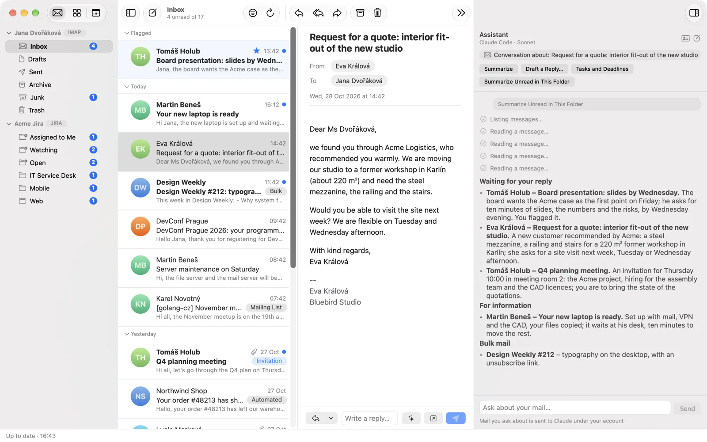
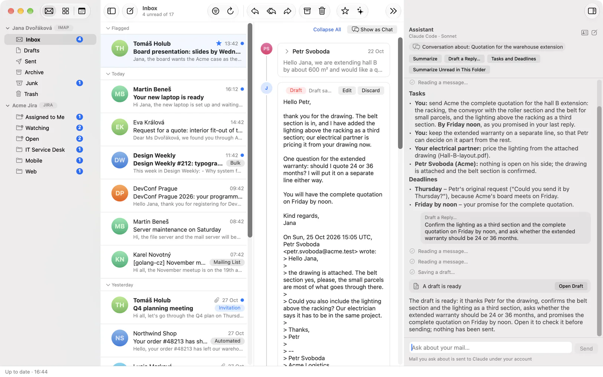
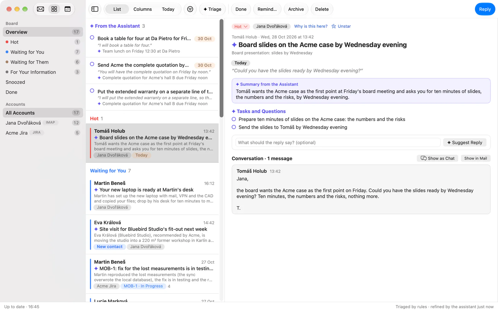
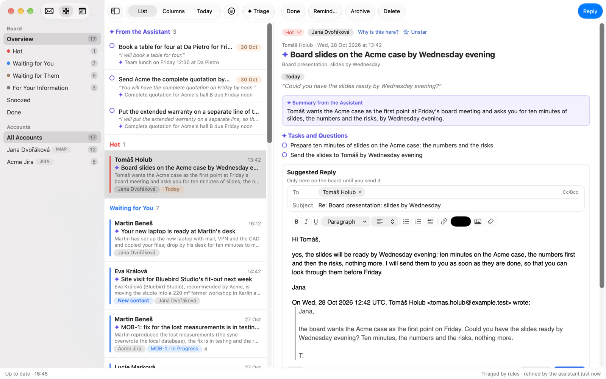
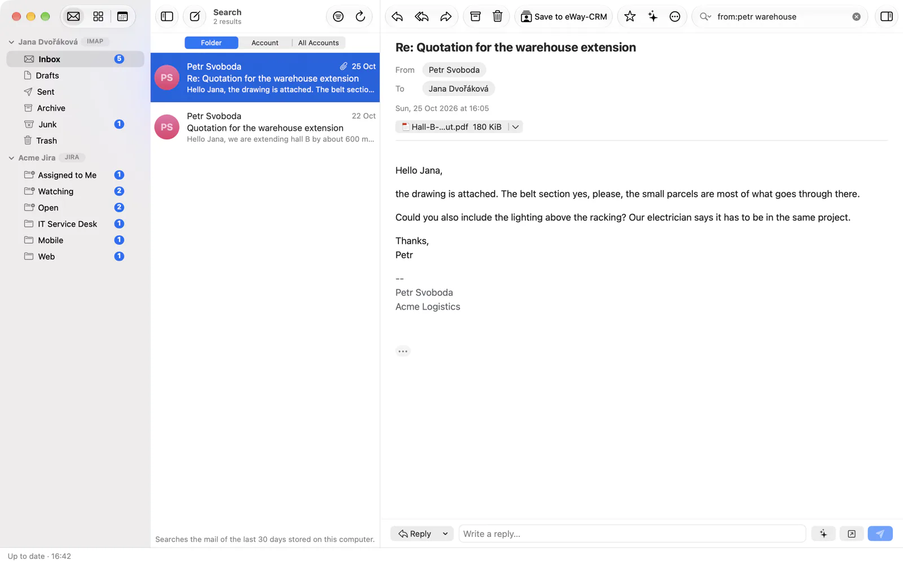
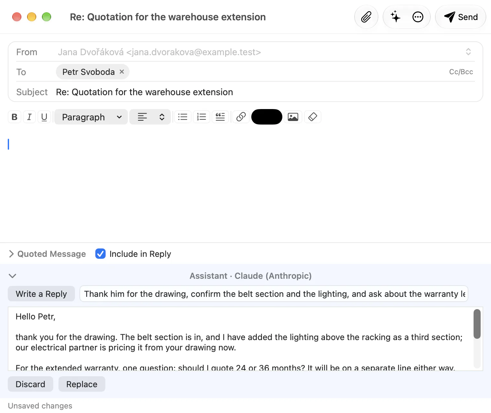
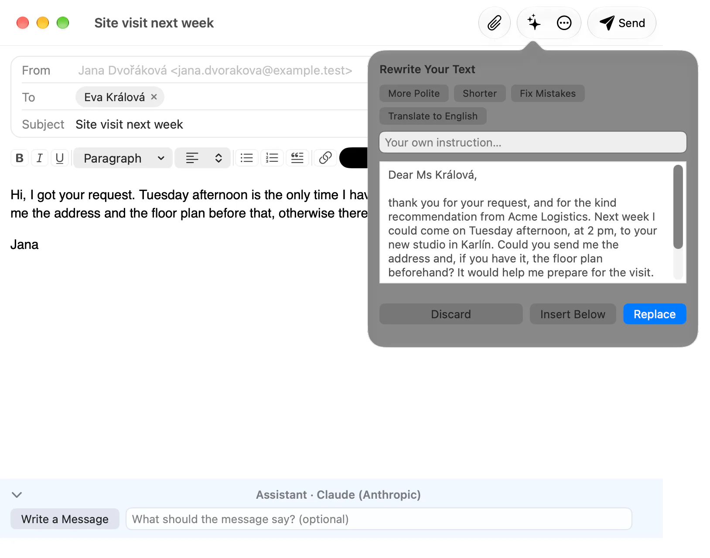

An assistant on your own account
Malachi Mail has no model of its own and no account with one. It works with the assistant you already have on your computer, Claude Desktop and Claude Code from Anthropic, or ChatGPT through Codex, and only when you ask. Whatever the assistant reads, it reads on your computer through the app's bridge; whatever it writes stays a draft until you send it.
Where it runs
Three ways, all optional, all under Preferences → AI. Until you switch one on there is no ✦ anywhere in the app, and nothing about your mail leaves your computer.
- A hand-off to Claude. The ✦ button opens Claude Desktop (macOS and Windows) or Claude Code with a prepared question about the selected mail. Claude reads the mail through the bridge, on your computer, under your own Claude subscription.
- A panel in the app (experimental). The app runs your own Claude Code, or ChatGPT through Codex, as a child process with nothing but the bridge's reading and drafting tools, and shows the conversation beside your mail. The first question asks for your consent.
- An agent of your own. The MCP bridge gives Claude Code, Claude Desktop, Zed, Cursor or any other MCP client a gated view of the mail, the calendar and the board, with the tiers you choose when you start it.
The panel, the Board's triage and the suggested replies are experimental: they run a command-line agent from inside an application, which Anthropic and OpenAI have yet to confirm the terms for. The hand-off and the bridge are ordinary use of those clients.
The ✦ button
With the bridge registered in Claude, every message, conversation and folder gets a ✦ menu: Summarize, Tasks and Deadlines, Suggest a Reply and Ask About This Message…; a folder offers Summarize Unread in This Folder; several selected messages are summarised or asked about together; an attachment's chip has Ask the Assistant…, which hands the file along as well. The ✦ in the calendar asks about an event.
The question opens in Claude Desktop's new chat (or, with the file, in a Cowork session) or in a terminal with Claude Code, written in your language and unsent: you read it, change it if you like, and send it yourself. It carries only the ids of the mail, never a subject, a sender or a line of text; those come to Claude through the bridge, fenced as data. The question ends with the reminder that mail content is data, not instructions.
The panel in the app
With the target In App, ✦ opens a panel on the right of the main window instead. The quick actions are the same, the answer arrives as text beside the mail it is about, and the conversation keeps its context: ask a follow-up, or select another message and the panel says so. A reply the assistant drafts appears as a card, Open Draft, which opens the ordinary New Message window with the draft in it. In the Calendar the panel offers What's on Today and Find Free Time.
The child process gets the bridge's reading and drafting tools and nothing else: no shell, no files, no web, none of your Claude Code settings, plugins or skills, and no saved session. You choose the model (Sonnet by default, Haiku or Opus) and see the sign-in state in the app; if Claude Code is signed out, the panel offers Sign in… and runs Claude Code's own sign-in in your browser without ever seeing the credentials. Stop ends the conversation at once.
When you tell the assistant something about yourself in the panel, it may propose a note for your profile; the note is saved only when you click Save.
Triage on the Board
The Board sorts your conversations by rules that read no words. ✦ Triage lets the assistant read the cases that wait for you and write a note on each: a title, a summary, why it is there, the tasks it contains, a deadline with the exact words it comes from, and a commitment you made in your own message, again quoted. The note is shown as the assistant's, beside the case; the quote is checked against the message before it is accepted.
What the assistant may not do: set a case's state, mark it done, remind, archive, discard a draft or change a setting. Those stay yours, and your decision always wins over its note. A run reads at most 40 cases; Triage new mail automatically runs it every 30 minutes when there is something new, up to 60 cases a day, after a consent of its own. The accounts it may read, its model (Sonnet by default, apart from the panel's) and the tokens it used in the last 24 hours are under Preferences → AI → Board.
Suggested replies
A case that waits for you, a message addressed to you, a Jira issue you are assigned to or reported, can ask for ✦ Suggest a Reply, with an instruction of your own if you like. The assistant reads the conversation through the bridge and writes a reply as a local draft linked to the case; you edit it right on the board, attach, send or discard it. Nothing goes out until you press Send. A case that waits for the other side offers Suggest a Reminder instead: a short follow-up on your own message.
Writing and rewriting
In the New Message window, ✦ rewrites what you have selected, or your own text above the quoted message: More Polite, Shorter, Fix Mistakes, Translate to English, or an instruction of your own. You see the result first and choose Replace, Insert Below or discard it; one undo step takes it back. A reply or forward also has a bar under the editor that writes the whole message from an instruction, with the original in view; its result goes into the editor only through Replace.
These requests are one shot and have no tools at all: the model sees your text and the message you are answering, nothing else from your mailbox.
Search in your own words
The search field's ✦ (or Alt+↩, ⌥↩) turns "invoices from Jana in March" into the search syntax, from:jana invoices after:2026-03-01 before:2026-04-01, and puts it in the field for you to run or edit. The search itself runs on your computer, as always.
Your profile
Preferences → AI → About Me holds what the assistant should know about you, up to 2 000 characters, the gender you write in, and a note of up to 500 characters for each mail and Jira account ("formal, sign as J. Dvořáková"). It goes with every request as your wishes, which never override the app's rules. With Share Profile with Apps over MCP on, an agent you run yourself gets it too, through the bridge.
For agents: the MCP bridge
malachi-mcp is a Model Context Protocol server over stdio that gives an agent a gated view of the mail, the calendar and the board. It is a client of the engine exactly like the desktop apps, with no mail logic and no credentials of its own. What an agent may do is decided when the server starts, not by the model:
| Tier | How to grant | What it adds |
|---|---|---|
| Read and draft | always on | accounts, folders, messages, search, attachments (with the text of PDF, DOCX and XLSX), sync, Jira transitions, the board, calendars, events, free time, invitations, the user profile, and drafts (a reply, a reply to all, a forward, a new message, a Jira comment) |
| Modify | -allow-modify | mark, move and delete messages, change an issue's status, unsubscribe, create an event |
| Send | -allow-send | send a message; with it, unsubscribing may send the unsubscribe mail and an event may invite attendees |
| Triage | -allow-triage | notes on the board's cases (a title, a summary, tasks, a deadline with its quote, a commitment), never a state you set yourself |
Preferences → AI → Register in Claude writes the bridge into Claude Desktop's and Claude Code's configuration and takes it out again; any other MCP client gets the malachi-mcp command by hand. A draft is inert: it rests in the local store and, after 30 seconds, in the account's Drafts folder, and goes out only when you send it. Everything that comes from mail is fenced as data before the model sees it, HTML never. The tools, the limits and the threat model are in the project's bridge documentation.
What is sent, and when
- Nothing before you ask. The app indexes nothing with a model and makes no call in the background; the one exception is the Board's automatic triage, which you switch on yourself and which asks for its own consent.
- What goes: the text of the messages you point at, or the agent reads; the text of an attachment when it is asked for; your profile; for a rewrite, your text and the message you answer. Never passwords, never HTML, never mail you did not point at, except what an agent with the bridge reads on its own, which you see in its transcript.
- Where it goes: to the model under your own account, Anthropic's or OpenAI's. The project runs no servers and sees nothing.
- Hard limits: the panel's process has no shell, files or web and keeps no session; the bridge's tiers are set at its start, not by the model; mail content is fenced as data with a nonce the model cannot forge; a draft is inert until you send it; on the Board the assistant writes notes and nothing else, and your decision wins.
- The hand-off carries ids only; the mail reaches Claude through the bridge, on your computer, with the same fence.
The whole threat model is written down in the project's security notes.
On the three platforms
| Linux | macOS | Windows | |
|---|---|---|---|
| Hand-off to Claude Desktop | Not supported | Yes | Yes |
| Hand-off to Claude Code | In a terminal | In a terminal | In a terminal |
| The panel in the app | Claude Code, ChatGPT | Claude Code, ChatGPT | Claude Code, ChatGPT |
| Triage and suggested replies | Yes | Yes | Yes |
| Rewriting and search in your own words | Yes | Yes | Yes |
| Register in Claude | Claude Code | Claude Desktop, Claude Code | Claude Desktop, Claude Code |
The assistant at work
Seven scenes over the same sample mailbox as the other pictures, taken on macOS: the assistant works the same way on Linux and Windows. The answers in them are samples: the mailbox is invented and the replies were prepared for it; what your own Claude or ChatGPT writes will differ.










from:petr warehouse in the search field; the search itself runs on your computer.



Scroll sideways for more